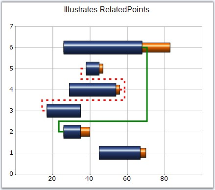

Lets you specify the relationship between two points in the Gantt chart type. This will render a line connecting the specified points.
|
Details | |
|
Possible Values |
A ChartRelatedPointInfo object, which has the following properties: Color - Any Color Object Alignment - Any PenAlignment Property Points - Integer Array containing the points which are to be connected. Count - Specifies the Number of points DashStyle - Any System.Drawing.Drawing2D.DashStyle DashPattern - A Float array with two values Width - Any Float value |
|
Default Value |
Color - Control Text Color Alignment - Center Points - Null Count - 0 DashStyle - Solid DashPattern - Null Width - 5.0f |
|
2D / 3D Limitations |
No |
|
Applies to Chart Element |
Any Series and Points |
|
Applies to Chart Types |
Gantt Chart |
Here is sample code snippet using RelatedPoints.
|
[C#]
// Related Points for first series int[] ptIndices = new int[] {2,4}; this.ChartWebControl1.Series[0].Styles[3].RelatedPoints.Points = ptIndices; this.ChartWebControl1.Series[0].Styles[3].RelatedPoints.Color = Color.Red; this.ChartWebControl1.Series[0].Styles[3].RelatedPoints.Alignment = System.Drawing.Drawing2D.PenAlignment.Right; this.ChartWebControl1.Series[0].Styles[3].RelatedPoints.DashStyle = System.Drawing.Drawing2D.DashStyle.Custom; this.ChartWebControl1.Series[0].Styles[3].RelatedPoints.Width = 3f; float[] dash = new float[] { 1.5f, 2.4f }; this.ChartWebControl1.Series[0].Styles[3].RelatedPoints.DashPattern = dash;
// Related Points for second series int[] ptIndices = new int[] { 1 }; this.ChartWebControl1.Series[1].Styles[5].RelatedPoints.Points = ptIndices; this.ChartWebControl1.Series[1].Styles[5].RelatedPoints.Color = Color.Green; this.ChartWebControl1.Series[1].Styles[5].RelatedPoints.Alignment = System.Drawing.Drawing2D.PenAlignment.Center; this.ChartWebControl1.Series[1].Styles[5].RelatedPoints.DashStyle = System.Drawing.Drawing2D.DashStyle.Solid; this.ChartWebControl1.Series[1].Styles[5].RelatedPoints.Width = 3f; |
|
[VB.NET]
' Related Points for first series Dim ptIndices As Integer() = New Integer() {2,4} Me.ChartWebControl1.Series(0).Styles(3).RelatedPoints.Points = ptIndices Me.ChartWebControl1.Series(0).Styles(3).RelatedPoints.Color = Color.Red Me.ChartWebControl1.Series(0).Styles(3).RelatedPoints.Alignment = System.Drawing.Drawing2D.PenAlignment.Right Me.ChartWebControl1.Series(0).Styles(3).RelatedPoints.DashStyle = System.Drawing.Drawing2D.DashStyle.Custom Me.ChartWebControl1.Series(0).Styles(3).RelatedPoints.Width = 3f Dim dash As Single() = New Single() { 1.5f, 2.4f } Me.ChartWebControl1.Series(0).Styles(3).RelatedPoints.DashPattern = dash ' Related Points for second series Dim ptIndices As Integer() = New Integer() { 1 } Me.ChartWebControl1.Series(1).Styles(5).RelatedPoints.Points = ptIndices Me.ChartWebControl1.Series(1).Styles(5).RelatedPoints.Color = Color.Green Me.ChartWebControl1.Series(1).Styles(5).RelatedPoints.Alignment = System.Drawing.Drawing2D.PenAlignment.Center Me.ChartWebControl1.Series(1).Styles(5).RelatedPoints.DashStyle = System.Drawing.Drawing2D.DashStyle.Solid Me.ChartWebControl1.Series(1).Styles(5).RelatedPoints.Width = 3f |

Figure 178: Gantt Chart with RelatedPoints specified for certain Data Points
See Also